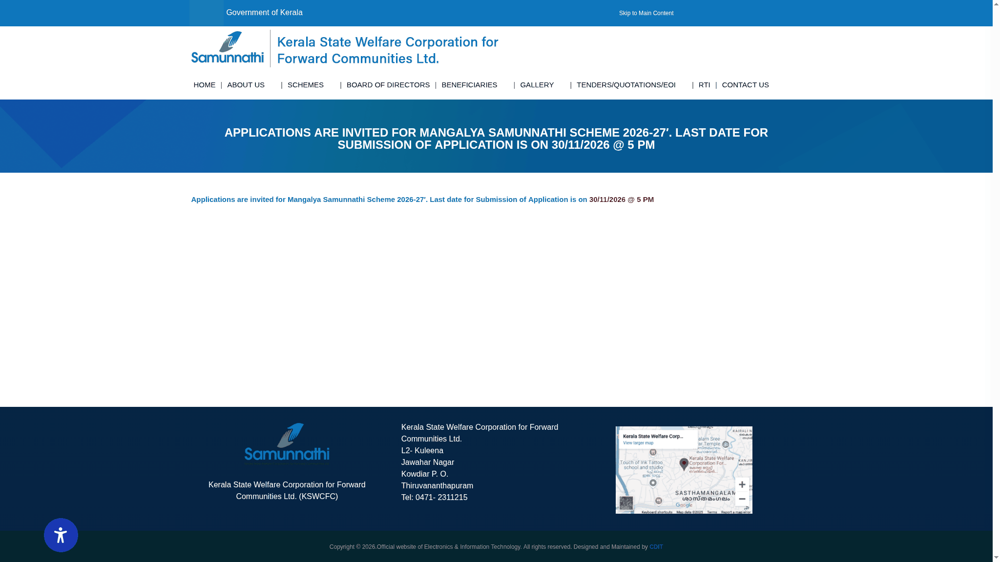

Mangalya Samunnathi: ₹70,000 marriage grant, apply by 30 November
Kerala State Welfare Corporation for Forward Communities Ltd. (KSWCFC / Samunnathi) invites applications for its Mangalya Samunnathi 2026-27 marriage-assistance scheme. Eligible families can receive a ₹70,000 grant for a daughter's completed marriage. The paper application and documents must reach Samunnathi by Monday, 30 November 2026 at 5 PM IST, by post or in person.
Forward communities, not backward-class schemes
This scheme supports economically disadvantaged families within Kerala's forward, non-reservation communities. It is not a Kerala State Backward Classes Development Corporation scheme. Low family income alone does not establish eligibility: the bride's community, ration-card category, age and marriage date must also satisfy the current rules.
Eligibility checklist
- The bride must belong to a non-reservation community in Kerala, supported by the community certificate or the relevant SSLC page specified in the guidelines.
- The applicant must hold an AAY yellow ration card or priority pink ration card. Both the applicant and bride must be members of that ration card.
- Total annual family income from all sources must not exceed ₹1 lakh. A family-income certificate is required; an individual-income certificate is not accepted.
- The bride must have been at least 18 years old on the marriage date.
- The marriage must have taken place between 1 November 2025 and 31 October 2026, including both dates. An upcoming wedding outside this completed-marriage window is not covered by this call.
- The application should normally be made by the bride's father or mother. A woman whose parents have died or abandoned her can apply in her own name with the required proof. The husband cannot apply.
- Remarriage is not covered, and each bride can receive this assistance only once.
Amount and selection
The guideline states ₹70,000, transferred directly to the applicant's active account at a nationalised or scheduled bank, subject to the availability of government funds. This is a grant, not an interest-bearing loan. Applying does not guarantee selection or payment.
Lower-income eligible applicants receive priority. At the same income level, the rules prioritise a bride with a disability, a bride who has lost her parents, a bride with parents with disabilities, a bride with a serious illness, a bride whose parents have a serious illness, and the bride's higher age, in the listed order.
Only one daughter's marriage can be considered from a family in a single application period. Across the scheme, a family can receive assistance for no more than two daughters.
Documents to attach
Read the checklist on page 6 of the official guideline and application PDF. It requires:
- The original wedding invitation from the bride's family.
- A self-attested copy of the marriage certificate.
- A Village Officer-issued family annual-income certificate in the applicant's name, obtained within the previous year. Do not substitute an individual-income certificate.
- The bride's community certificate issued by the Village Officer, or a self-attested copy of the SSLC page showing the community.
- A self-attested copy of the latest ration card, showing the applicant and the bride.
- Self-attested Aadhaar copies of the applicant and bride.
- Self-attested proof of the bride's age: SSLC certificate or birth certificate.
- A copy of the first page of the applicant's bank passbook, clearly showing the name and account details.
- If claiming disability or serious-illness priority for the bride or parents, a self-attested copy of the supporting certificate.
- If the bride applies because her parents have died, self-attested copies of the parents' death certificates.
- If the bride applies because her parents abandoned her, the certificate specified in the current form from the relevant Panchayat Secretary.
How to apply: download, print and deliver
- Open the current 2026-27 official notice and download the six-page guideline/application PDF. Do not use last year's form or deadline.
- Read pages 1-3, then complete the application on pages 4-5 and its declaration. The declaration has signature fields for both the applicant and the married daughter.
- Attach all mandatory documents and check the page-6 checklist. Incomplete applications or missing mandatory records can be rejected without further notice.
- Write “മംഗല്യ സമുന്നതി (2026-27) പദ്ധതിയിലേയ്ക്കുള്ള അപേക്ഷ” on the envelope, as the form requires.
- Send by post or deliver in person so that the complete application reaches the address below before 30 November 2026 at 5 PM IST. Posting it on the last day is not enough.
Address printed on the current application:
Managing Director
Kerala State Welfare Corporation for Forward Communities Ltd.
L2, Kuleena, T.C. 23/2772, Jawahar Nagar
Kowdiar P.O., Thiruvananthapuram - 695003
The website provides a downloadable form. The checked guidelines do not offer an online-only submission route. Use the address in the current PDF if an older page or social post differs. For clarification, the official notice footer lists 0471-2311215.

Before sending
Use accurate details and valid records. The guidelines provide for verification and inspections. If assistance is obtained through false information, recovery with the prescribed interest and legal action may follow, and future eligibility can be lost. That is a misrepresentation-recovery condition, not a normal loan repayment schedule. The corporation can change conditions and its decision is final.
Video guide
We could not verify a reliable English or Malayalam video walkthrough for the current 2026-27 form. Use the official Malayalam PDF and the written checklist above. A general social-media explanation is not a substitute for the current marriage-date window and paper-delivery instructions.
What we verified
We inspected all six pages of the official 2026-27 guideline/application PDF linked by KSWCFC's current notice. The amount, income ceiling, ration-card rules, marriage-date window, documents, envelope wording and address above come from that PDF. No form was completed, application submitted, or personal information entered.
Sources: KSWCFC current notice and 2026-27 guidelines and application form. Checked 13 November 2026. Explainer by AiCoN, not a government publication. Recheck the official notice before sending.